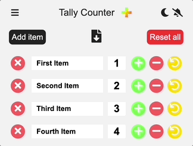
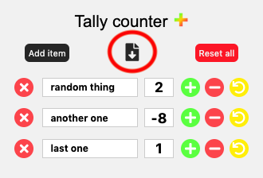

Thank you for installing Tally counter

Some features you might appreciate:
Keyboard shortcuts / Hotkeys
Default:
Shortct/hotkey
Windows
macOS
Show/hide extension:
alt + t
+ t
First item +1:
alt + 1
+ 1
First item -1:
alt + shift + 1
+ ⇧ + 1
The hotkeys work even when the extension is closed. By default you will get a notification and see a
number in the extension icon (see badges below). You can disable the notifications by clicking the
slashed bell in the top-left corner.
To set more hotkeys go to
chrome://extensions/shortcuts
(you need to copy it into the address bar, clicking won't work).
Introducing dark mode
You can embrace the
darkness
with the toggle in the top-right corner!
Mute notifications
Are you using the hotkeys (more information above) and you hate the notifications poping when the extension is
closed? Mute notifications with the
toggle in the top-right corner! Click the slashed bell icon and live
peacefully again.
Color icon badges
Since you can mute notifications now, it would be nice if you had some visual feedback when pressing the hotkey.
Introducing badges, handy little things that appear under the extension icon when you press the hotkey!
Badges have different backgrounds based on the order of the item you pressed the hotkey for:
First item
Second item
Third item
Fourth item
Fifth item
Reorder your items
You can now reorder your items easily! Click the reorder icon in the top-left corner to enter reorder mode.

In reorder mode, simply drag and drop items to rearrange them. Click "Save order" when you're done. If you
click away or close the extension without saving, nothing is changed.
Hotkeys and badge colors
IMPORTANT!
Remember, hotkeys are linked to item positions, not the items themselves. This can lead to unintended
behavior - for example if you moved the third item to the first place and still pressing the third hotkey,
you would be updating a different item. To illustrate what item is linked to which hotkey/badge, the drag
icons are matching the badge colors:
First item
Second item
Third item
Fourth item
Fifth item
If you prefer to keep using the same keys for specific items after reordering, you need to customize your
hotkeys!
Export
You can export your data to .csv via the export button:
